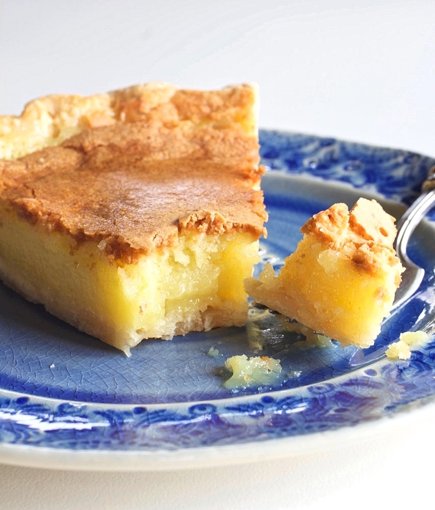

Maysville's Historic Transparent Pie

Ingredients
- 1 stick butter, melted
- 2 cups sugar
- 1 cup heavy whipping cream
- 4 eggs, beaten
- 2 tablespoons all purpose flour
- 1 teaspoon pure vanilla extract
- 1 unbaked 9″ (deep dish) pie shell or 2 unbaked 9″ (shallow) pie shells*
Instructions
- Preheat oven to 375 degrees.
- Place the butter and sugar in the mixing bowl of a stand mixer, or use a hand mixer. Mix together on medium speed for a couple of minutes.
- Add the whipping cream and mix on high speed for about two minutes until the cream has started to slightly thicken and the mixture is light and fluffy.
- Add the beaten eggs, vanilla and flour and mix well.
- Pour the batter into unbaked pie shell'(s) and cover the edges of the crust with foil.
- Bake for about 45 minutes until the top is golden brown and no longer jiggly in the center.
- Cool completely before serving.
Notes
*The original recipes states to use a 9″ pie shell. If you use a store bought pie shell, the filling is almost too much for one deep dish pie shell…the top gets too brown before the filling gets done. I prefer to bake this pie filling in 2 “shallow” pie shells. It's a thinner pie, but turns out perfect.
Recipe Source